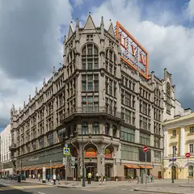
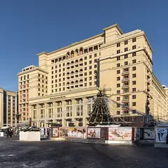

Места по типу · данные на 15 октября
Рестораны Москвы: где поужинать
В каталоге 237 ресторанов и кафе: 25 недорогих (примерно до 1 500 ₽ на человека) и 99 — для особого случая, 19 из гида Michelin 2021. 185 мест в центре, остальные — по 11 округам Москвы и Подмосковья. Для многих есть готовые планы: прогулка до ужина или бар после.
- 237 мест
- 200 планов
- 12 округов
Рестораны 40 из 237
Ходынский бул., 4
Ресторан Novikov Group в «Авиапарке» с честной узбекской кухней без восточной показухи.
Подробнее и маршрут: LaliПозвать сюда: Lali
Фото: A.Savin, Free Art License · Wikimedia Commons
Страстной бул., 8А
Две звезды Michelin 2021
Фермерские продукты и вид на центр с седьмого этажа.
Подробнее и маршрут: Twins GardenПозвать сюда: Twins Garden
Фото: Tamara Ivanova-Issayeva, CC BY-SA 4.0 · Wikimedia Commons
Театральный пр., 2
Новое
Парадный зал отеля «Метрополь» под витражным куполом с фонтаном. По воскресеньям с 13 до 17 — знаменитый бранч-буфет, в остальные дни утром завтраки. Для особого повода.
Подробнее и маршрут: МетропольПозвать сюда: Метрополь
Фото: Никонико962, CC BY-SA 4.0 · Wikimedia Commons
Театральный пр., 2
Звезда Michelin 2021
Современная русская кухня Андрея Шмакова в «Метрополе».
Подробнее и маршрут: СавваПозвать сюда: Савва
Фото: A.Savin, Free Art License · Wikimedia Commons
Поварская ул., 52/55, стр. 2
В гиде Michelin 2021
Премиальный итальянский ресторан Новикова в усадьбе Долгоруковых.
Подробнее и маршрут: Assunta MadreПозвать сюда: Assunta Madre
Фото: Stas Lobov, CC BY-SA 3.0 · Wikimedia Commons
Смоленская пл., 3 (16 этаж)
Звезда Michelin 2021
Ресторан со звездой Michelin под стеклянным куполом с видом на центр. 12:00–00:00.
Подробнее и маршрут: White RabbitПозвать сюда: White Rabbit
Фото: Wikimaniawikimania, CC BY-SA 4.0 · Wikimedia Commons
Моховая ул., 15/1, стр. 1
Иммерсивный ужин-шоу в «Национале»: каждая подача — часть спектакля.
Подробнее и маршрут: КалейдоскопПозвать сюда: Калейдоскоп
Фото: A.Savin, CC BY-SA 3.0 · Wikimedia Commons
Тверской бул., 26А
Дворянская усадьба XIX века: библиотека, аптекарский зал и русская кухня. 10:00–23:00.
Подробнее и маршрут: Кафе «Пушкинъ»Позвать сюда: Кафе «Пушкинъ»
Фото: Mike1979 Russia, CC BY-SA 3.0 · Wikimedia Commons
Смоленская ул., 5 (23-й этаж)
Новое
Ресторан на 23-м этаже отеля у Смоленской: за окнами высотка МИД, Арбат и огни Сити. Недёшево, но за вечерней Москвой сверху сюда и приходят.
Подробнее и маршрут: ПанорамаПозвать сюда: Панорама
Фото: Vlsr1, CC0 · Wikimedia Commons
ул. Академика Королёва, 15, корп. 1
Новое
Вращающийся ресторан на Останкинской башне: за обедом вся Москва медленно проплывает за окном. Попасть можно только с билетом на смотровую площадку, бронируй заранее.
Подробнее и маршрут: Седьмое небоПозвать сюда: Седьмое небо
Фото: Klodklodklod77, CC BY-SA 4.0 · Wikimedia Commons
Рождественский бул., 1
65+ корнеров с кухнями мира, по четвергам–субботам вечеринки. До 23:00, в чт–сб до полуночи.
Подробнее и маршрут: Центральный рынокПозвать сюда: Центральный рынок
Фото: T3ru, CC BY-SA 4.0 · Wikimedia Commons

ул. Петровка, 2
В гиде Michelin 2021
Брассери на пятом этаже ЦУМа с видом на Большой театр.
Подробнее и маршрут: BURO.TSUMПозвать сюда: BURO.TSUM
Фото: A.Savin, Free Art License · Wikimedia Commons
1-й Красногвардейский пр., 21, стр. 2
Русская кухня на 85-м этаже башни «ОКО» — один из самых высоких ресторанов Европы.
Подробнее и маршрут: RUSKIПозвать сюда: RUSKI
Фото: mos.ru, CC BY 4.0 · Wikimedia Commons
ул. Чаплыгина, 1А, стр. 1
Ресторан при «Табакерке» от Folio Group — удобно до и после спектакля.
Подробнее и маршрут: АртистПозвать сюда: Артист
Фото: mos.ru, CC BY 4.0 · Wikimedia Commons
Берсеневский пер., 2, стр. 1
Ресторан на «Красном Октябре», где сыр варят прямо при гостях.
Подробнее и маршрут: СыроварняПозвать сюда: Сыроварня
Фото: Dmitry Ivanov., CC BY-SA 4.0 · Wikimedia Commons
Кутузовский просп., 2/1, стр. 1
Итальянский ресторан на 29-м этаже высотки «Украина» с видом на Москву-реку.
Подробнее и маршрут: BuonoПозвать сюда: Buono
Фото: Lite, CC BY-SA 3.0 · Wikimedia Commons
Весковский пер., 3
Дог-френдли мексиканское кафе с открытой кухней у Новослободской.
Подробнее и маршрут: Taco ProjectПозвать сюда: Taco Project
Фото: Stolbovsky, CC BY-SA 3.0 · Wikimedia Commons
Октябрьская ул., 2
Ужин в полной темноте: обслуживают незрячие официанты, играет живая музыка. Только по записи, сеанс ~2 часа.
Подробнее и маршрут: В темноте?!Позвать сюда: В темноте?!
Фото: Олег Черкасский, CC BY-SA 4.0 · Wikimedia Commons
ул. Усачёва, 26
Фермерские прилавки, фудкорт с проектами известных рестораторов и веранда. 10:00–22:00.
Подробнее и маршрут: Усачёвский рынокПозвать сюда: Усачёвский рынок
Фото: Artem Svetlov, CC BY 4.0 · Wikimedia Commons

Охотный Ряд, 2
Кухня народов Сибири в двух шагах от Красной площади: сиг, чавыча и таймырский олень.
Подробнее и маршрут: ManulПозвать сюда: Manul
Фото: Alex 'Florstein' Fedorov, CC BY-SA 4.0 · Wikimedia Commons
Ленинградское ш., 51
Сезонный ресторан у причалов Северного речного вокзала с закатами над водой.
Подробнее и маршрут: MooringПозвать сюда: Mooring
Фото: mos.ru, CC BY 4.0 · Wikimedia Commons
Арбатская пл., 14, стр. 1
Современная русская кухня у Арбатской площади; по будням днём — чаепития.
Подробнее и маршрут: NikiПозвать сюда: Niki
Фото: A.Savin, Free Art License · Wikimedia Commons
Большой Палашёвский пер., 2
В гиде Michelin 2021
Необистро у Патриарших: завтраки до 16:00, авторские коктейли вечером.
Плотников пер., 12
В гиде Michelin 2021
Приватный стейк-хаус в арбатских переулках.
Моховая ул., 15/1, стр. 1
Звезда Michelin 2021
Икорный бар и русская кухня в «Национале» с видом на Кремль.
просп. Мира, 119, стр. 66А
Новое
Павильон ВДНХ, где собраны кухни регионов России: можно попробовать карельский суп с форелью и калитки. Места много — удобно пообедать после прогулки по выставке.
Подробнее и маршрут: Дом российской кухниПозвать сюда: Дом российской кухни
Яузская ул., 6
Ресторан в усадьбе Демидовых-Рахмановых у «Иллюзиона»: камин и антикварная посуда. 12–23.
ул. Пятницкая, 42
Отель-ресторан с садом, вермутерией и галереей в Замоскворечье. 9–00.
Смоленская ул., 8
Звезда Michelin 2021
Морепродукты на верхнем этаже отеля Azimut с панорамой города.
Новорязанская ул., 23, стр. 1
60 корнеров в бывшем троллейбусном депо и большая крыша-терраса. До 23, в пт–сб до 00.
Подробнее и маршрут: Три вокзала. ДепоПозвать сюда: Три вокзала. Депо
Кутузовский пр., 36А
Устрицы, рыба и морепродукты по разумным ценам, каждый день — позиция по себестоимости.
Подробнее и маршрут: Atlantica SeafoodПозвать сюда: Atlantica Seafood
ул. Усачёва, 2, стр. 1
Новое
Бистро у «Фрунзенской» с большими завтраками и бранчами по выходным: драники с лососем, сырники, домашние десерты. Летом веранда, рядом прогулка до Лужников.
Красная пл., 3 (ГУМ)
Новое
Кафе в ГУМе с окнами на Красную площадь и Кремль. Завтраки с 9 утра, вечером живая музыка — красивая точка, чтобы начать или закончить прогулку по центру.
Большой Патриарший пер., 7, стр. 1
Ресторан в павильоне прямо на Патриарших прудах: открыт с 9:00 до полуночи, по воскресеньям — бранчи.
Подробнее и маршрут: ERWIN.ПавильонПозвать сюда: ERWIN.Павильон
Чистопрудный бул., 23, стр. 1
Bib Gourmand Michelin 2021
Маленький ресторан на Чистых прудах с французским настроением и хорошим вином.
Большая Филёвская ул., 22, стр. 16А
Ресторан в глубине парка «Фили» с деревянной террасой среди вековых деревьев.
ул. Остоженка, 27, корп. 2
Bib Gourmand Michelin 2021
Французское необистро на Остоженке.
Малая Бронная ул., 22, стр. 2
Звезда Michelin 2021
Французская кухня и одна из лучших винных карт Москвы.
Малая Бронная ул., 28/2
В гиде Michelin 2021
Бистро на Патриарших.
Подробнее и маршрут: Margarita BistroПозвать сюда: Margarita Bistro
Новинский бул., 31
Звезда Michelin 2021
Авторская кухня Анатолия Казакова.


Готовые планы с этими местами 12 из 200
- Большой театр · Театр · м. Охотный ряд
- 4 минуты пешкомМетрополь · Ресторан в историческом отеле
Спектакль на главной сцене страны, а через Театральную площадь — ужин в парадном зале «Метрополя» под витражным куполом с фонтаном.
Открыть план: Большой театр и ужин под куполомПозвать сюда: Большой театр и ужин под куполом
Фото: Юрий Д.К., CC BY 4.0 · Wikimedia Commons
- Театр Вахтангова · Театр · м. Смоленская
- 15 минут пешкомПанорама · Панорамный ресторан
Спектакль в Театре Вахтангова на Арбате, потом минут пятнадцать пешком до Смоленской — и ужин на 23-м этаже, где за окнами высотка МИД и огни Сити.
Открыть план: Вахтангов и ужин на 23-м этажеПозвать сюда: Вахтангов и ужин на 23-м этаже
Фото: A.Savin, Free Art License · Wikimedia Commons
- Красная площадь · Площадь · м. Площадь Революции
- 9 минут пешкомМетрополь · Ресторан в историческом отеле
Прогулка по Красной площади, а с 13 до 17 по воскресеньям — знаменитый бранч-буфет «Метрополя» под витражным куполом с фонтаном.
Открыть план: Воскресный бранч в «Метрополе»Позвать сюда: Воскресный бранч в «Метрополе»
Фото: mos.ru, CC BY 4.0 · Wikimedia Commons
- Останкинская башня · Смотровая площадка · м. Бутырская
- 4 минуты пешкомСедьмое небо · Ресторан на телебашне
Сначала смотровая Останкинской башни со стеклянным полом, потом столик во вращающемся «Седьмом небе»: пока ужинаете, под вами медленно проплывает вся Москва. Билеты и бронь — заранее.
Открыть план: Годовщина на 337 метрахПозвать сюда: Годовщина на 337 метрах
Фото: Klodklodklod77, CC BY-SA 4.0 · Wikimedia Commons
- Дом-музей Пастернака · Музей · м. Боровское шоссе
- 10 минут пешкомДом творчества Переделкино · Литературный центр
- 1 минута пешкомБиблиотека · Ресторан
Дача Пастернака, прогулка среди сосен писательского городка и обед в «Библиотеке» с камином и книжными полками — почти загородный день, не уезжая из Москвы.
Открыть план: День в ПеределкинеПозвать сюда: День в Переделкине
Фото: Артём Белевич, CC BY-SA 4.0 · Wikimedia Commons
- Культурный центр ЗИЛ · Культурный центр · м. Автозаводская
- 13 минут пешкомStrEAT · Фудхолл
Лекция или кино в конструктивистском ДК ЗИЛ, а потом фудхолл StrEAT в корпусе завода «Динамо»: дагестанские хинкалы или баббл-ти — каждый берёт своё.
Открыть план: ДК ЗИЛ и уличная едаПозвать сюда: ДК ЗИЛ и уличная еда
Фото: NVO, CC BY-SA 3.0 · Wikimedia Commons
- Музей-квартира Достоевского · Музей · м. Достоевская
- 12 минут пешкомФудхолл «Дружба» · Фудхолл
Квартира, где прошло детство Достоевского, а через десять минут — фудхолл «Дружба»: рамен, утка по-пекински или малатан, порции большие, цены спокойные.
Открыть план: Достоевский и фудхолл «Дружба»Позвать сюда: Достоевский и фудхолл «Дружба»
Фото: Lesio, CC BY-SA 3.0 · Wikimedia Commons
- Парк 40-летия Победы · Парк · Зеленоград — Крюково (МЦД-3)
- 27 минут пешкомBrunch Time · Кафе завтраков
Утренний круг вокруг пруда в главном парке Зеленограда, а потом Brunch Time, где драники, бенедикты и вафли с солёной карамелью подают весь день.
Открыть план: Зеленоград: пруд и завтрак весь деньПозвать сюда: Зеленоград: пруд и завтрак весь день
Фото: Sergey A. Demidov, CC BY 4.0 · Wikimedia Commons
- Московская консерватория · Концертный зал · м. Охотный ряд
- 1 минута пешкомMamie · Бистро
Классика в Большом или Малом зале консерватории — бывают недорогие билеты на балкон, — а через дорогу Mamie, светлое бистро в духе французского дома на юге.
Открыть план: Консерватория и французское бистроПозвать сюда: Консерватория и французское бистро
Фото: A.Savin, Free Art License · Wikimedia Commons
- Красная площадь · Площадь · м. Площадь Революции
- 3 минуты пешкомBosco Cafe · Кафе с видом на Кремль
Красная площадь утром, пока нет толп и очередей, а с 9 часов — завтрак в Bosco Cafe в ГУМе, где окна смотрят прямо на Кремль.
Открыть план: Красная площадь до толп и завтракПозвать сюда: Красная площадь до толп и завтрак
Фото: mos.ru, CC BY 4.0 · Wikimedia Commons
- Mega Ice в «Авиапарке» · Крытый каток · м. ЦСКА
- 1 минута пешкомLali · Узбекский ресторан
Каток на 4-м этаже «Авиапарка» работает круглый год: прокат без залога, в пятницу и субботу — до 23:00. Ужинать — в Lali в том же ТЦ, никуда не выходя на холод.
Открыть план: Крытый каток и ужин в «Авиапарке»Позвать сюда: Крытый каток и ужин в «Авиапарке»
Фото: A.Savin, Free Art License · Wikimedia Commons
- Mega Ice в «Авиапарке» · Крытый каток · м. ЦСКА
- 1 минута пешкомLali · Узбекский ресторан
- 19 минут пешкомТрели · Караоке с кабинками
Покататься на крытом катке «Авиапарка», поужинать в Lali там же, а потом закрыться в своей кабинке караоке «Трели» у «Аэропорта» — поют до 6 утра.
Открыть план: Лёд, плов и своя караоке-кабинкаПозвать сюда: Лёд, плов и своя караоке-кабинка
Фото: A.Savin, Free Art License · Wikimedia Commons


Как позвать
- Выбери план, место или событие — в карточке адрес, цены и маршрут в Яндекс Картах.
- Нажми «Позвать сюда» — соберётся приглашение-игра для свидания или голосование для компании.
- Отправь ссылку в любой мессенджер: тебе ответят, а компания отметит, куда и когда может. Бесплатно и без регистрации.